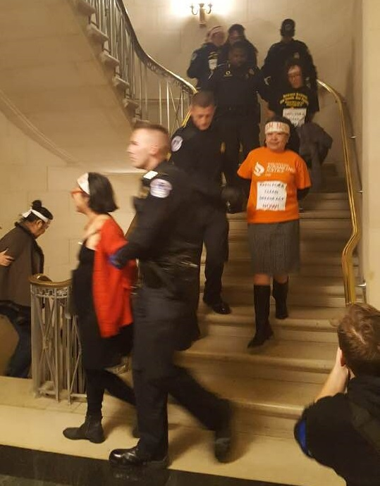

November 20, 2017
Washington, DC — On November 15, 2017, Janet Dennie, Ohio activist and member of the Ohio Progressive Asian Women’s Leadership was one of 19 activists arrested on Capitol Hill in a protest for a clean DREAM Act by December 8th.
Dennie, a Korean American grandmother from Columbus, Ohio, was one of 19 Asian American immigration and labor rights activists arrested for civil disobedience in a protest outside Speaker of the House Paul Ryan’s (R-WI) office. The action was part of a national convening of more than 120 Asian American and Pacific Islander (AAPI) immigrant youth and allies from over 15 states convened at the U.S. Capitol to demand the passage of a clean DREAM Act that does not include tightening border security such as the building of a wall, make changes to family-based visas, or implement any provisions of the RAISE Act (S. 354).
When the first DREAM Act was introduced 16 years ago, it was inspired by an Asian American student barred from attending a prestigious music college due to her immigration status. Today almost 17,000 AAPIs have benefitted from the DACA program with South Korea, China, India and the Philippines being among the top countries of origin of AAPI DACA-eligible populations.
http://usa.inquirer.net/8129/19-asian-americans-arrested-demo-clean-dream-act#ixzz4ypRHuBsE
http://www.dispatch.com/news/20171120/columbus-grandmother-arrested-in-dc-daca-protest
For more information contact:
Kelly Hill